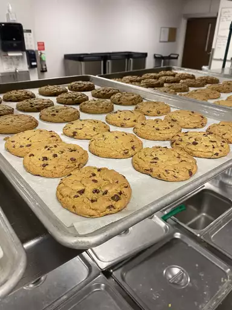

Recipe for Chocolate Chip Cookies
Description
This recipe for Chocolate Chip Cookies is as old as time and a perfect little treat for after dinner. Just don't tell grandma about this or she wont be happy we stole it.
Ingredients
- 1 cup butter, softened
- 1 cup white sugar
- 1 cup packed brown sugar
- 2 eggs
- 2 teaspoons vanilla extract
- 1 teaspoon baking soda
- 1/2 teaspoon salt
- 3 cups all-purpose flour
- 2 cups semisweet Chocolate chips
- 1 cup of chopped walnuts
Steps
- Preheat the oven to 350 degrees F (175 degrees C).
- Beat butter, white sugar, and brown sugar with an electric mixer in a large bowl until smooth. Beat in eggs, one at a time, then stir in vanilla. Dissolve baking soda in hot water. Add to batter along with salt. Stir in flour, chocolate chips, and walnuts.
- Drop spoonfuls of dough 2 inches apart onto ungreased baking sheets.
- Bake in the preheated oven until edges are nicely browned, about 10 minutes. Cool on the baking sheets briefly before removing to a wire rack to cool completely.